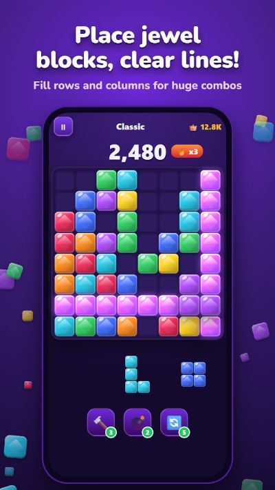
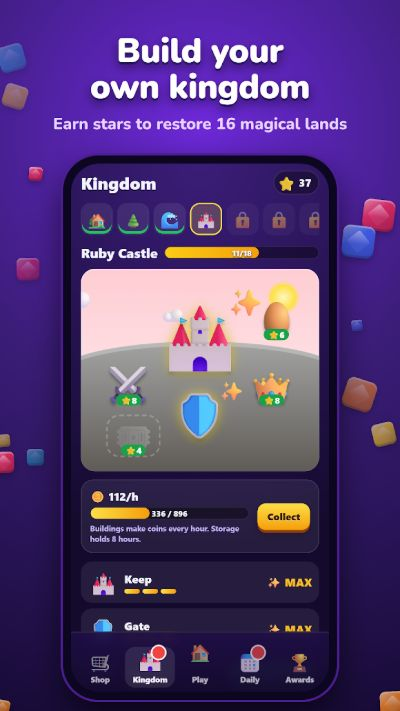

8 tips for higher scores
- Always keep a 3×3 space open. It is the one shape that accepts almost every piece, including the big square.
- Plan for all three pieces. Before placing the first, check that the other two will still fit afterwards.
- Fill edges and corners first. Keep the middle flexible for awkward L and line pieces.
- Avoid single-cell holes. Only the 1×1 piece can fill them — and it rarely comes when you need it.
- Clear several lines at once. Multi-line clears and back-to-back clears build combos that score far more than single lines.
- Hammer for one block, Bomb for a mess. The Hammer smashes a single block; the Bomb clears a 3×3 area full of scattered cells.
- Refresh only when stuck. It gives you three new pieces — use it when none of the current ones fit.
- Take your time. There is no timer. A five-second look at the board beats a fast mistake.


Screenshots from the Jewel Block Kingdom Google Play listing.
Pick the right mode
- Adventure: hundreds of levels — collect the gems hidden in the blocks and aim for 3 stars.
- Classic: the endless board, saved automatically so you can stop and continue anytime.
- Daily Challenge: one fresh board a day, the same for every player. Keep the streak alive for monthly rewards.
Grow your kingdom
Every game earns stars. Spend them on landmarks across 16 lands — from Crystal Village and Ruby Castle to Coral Reef and Star Station. Your kingdom earns coins every hour even while you are away, and finishing a land opens a reward chest and the next land. The shop also has block skins — gem, candy, neon, wood, ice and royal gold — plus board themes.
More on the Jewel Block Kingdom page, or compare it with our guide to casual puzzle genres.